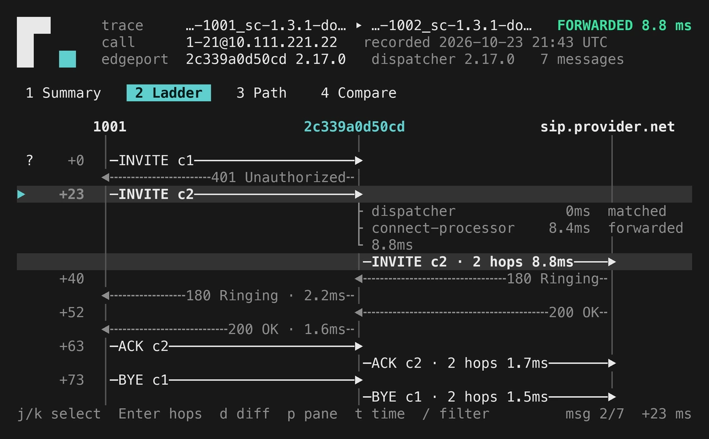

Every SIP
message,
on record.
When a call goes wrong, you shouldn't have to guess why. Routr keeps the full record of every call and lets you play it back.

Calls fail in the dark.
A header goes missing. A number gets rewritten. A carrier says no. You hear about it from a customer, and the clues are scattered across five services.
Routr writes it all down.
Every message passes one point.
On its way to the carrier, each message goes through Routr's Dispatcher. That is where Routr writes it down: what came in, what each step changed, and what went out.
Nothing else to run, and calls are not held up: the record is written after the message has moved on.
Then Connect routes the call to your carrier as usual. Nothing else to run, and calls are not held up.
From “what happened?” to an answer.
See what happened.
Play back any call, message by message. See where it went, what changed along the way, and where it stopped.
Know it's right.
Every call is checked against the SIP standards carriers expect, so problems show up before they become tickets.
Upgrade with confidence.
Record a call before and after an upgrade. If Routr behaves differently, you see exactly where.
On in two settings.
Turn recording on in the Dispatcher. Then mark the Trunk, Agent, Peer or Domain you care about. Or record every call with mode: all.
kind: MessageDispatcherspec: recording: enabled: true path: /var/routr/traces mode: flaggedkind: Trunkref: trunk-01spec: trace: enabled: trueno extra service to run
or only the ones you flag
dark or light, laptop or SSH
fail the build on a bad call